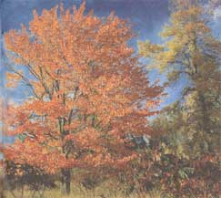

SEASONS
Is there a perfect tree? Fred Schaaf nominates fall's "queen of firewood."
There are so many different places in the United States and the rest of the world with lovely autumn foliage displays and so many trees with outstanding colors. But let's be honest: The locale most famous for awesome fall leaf hues is Vermont and the tree most famous is the sugar maple.
Over 40 years ago, Rutherford Platt wrote American Trees; A Book of Discovery , a volume in which he described several hundred species with great eloquence and with truly unsurpassable enthusiasm. But among countless favorites was there a "best" tree? He wrote, "If you would see perfection, go look at the maple. It is like truth made into the form of a tree." And about one particular kind of maple: "Sugar maple is [the] most successful tree, and contender for the title of most beautiful tree in the world."
I feel sure that by "successful," Platt here meant successful at being the artistic essence of what a tree should be. I say this because the sugar maple is not most successful in the more prosaic sense of being able to establish itself in a great variety of climates.
As Platt himself notes elsewhere, the sugar maple is not a big-city tree; it needs fresh, pure air. And it has other requirements, for unlike the also beautiful and colorful red maple (which is more tolerant of different soil types), it does not grow all over the eastern United States. One authoritative guide says it grows south to North Carolina and Tennessee, west to eastern Kansas, and in localized areas of northwestern South Carolina and northern Georgia. A map shows it extending to southern Missouri but surprisingly not into Arkansas. (Would any of our readers beg to differ?) Platt also notes that the sugar maple is a distinctively American tree; it will not grow in England.
Platt goes on to explain what perfect balance there is in all parts of a maple, from overall design to smallest detail, and how healthy and successfully adjusted to its environment the maple is. The wood is one of the very best for furniture and for firewood. All of these attributes are preeminently true of the sugar maple ("the queen of firewood," it doesn't throw out sparks). In addition, there is of course the tree's role as the source of the best sap for maple syrup. But the time to tap for syrup making is early spring.
In autumn, the sugar maple leaves flame first with gold, then start adding orange, and finally might (or might not) finish with red. A maple with red leaves is more likely to be red maple than sugar maple, but the variety of the sugar maple's colors is wonderful - and so is stopping at orange. After all, orange is the perfect complement to the blue sky of clear, sunny days. And it is the clear, sunny days that are best - in concert with clear, cold nights - for inducing bright colors.
The ultimate way to tell a sugar maple leaf from a red maple leaf is to look at the curve between the lobes of the leaf. If the curve forms a rounded U shape, the leaf belongs to a sugar maple; if the curve forms a sharper V shape, then the leaf belongs to a red maple.
If you wish to preserve some of the most beautiful of colored autumn leaves, you can easily do so. Just use the transparent, sticky-backed paper available at many grocery, hardware, and craft stores. Put your leaf or leaves on a piece of poster board. Next, cut out a piece of adhesive paper a bit larger than the leaf, peel off the backing, and press it with the sticky side down over the leaf. Just make sure the piece of sticky paper is large enough and that you smooth it to press out any air bubbles.
TRUTH MADE INTO FORM
The sugar maple isn't a big-city tree. It needs pure, fresh air to flourish.
This fall, in October and November, watchers of the night sky can see Mercury and Venus before dawn, a very slight lunar eclipse, and some other special astronomical events that not every year brings. The best of these are described briefly in the accompanying almanac table.
But there are certain astronomical sights that, although visible every autumn, are irresistible to both veteran and novice observer. One of these is the farthest light that can be easily seen by the unaided eye: M31, the great galaxy in the constellation Andromeda.
A galaxy is usually a collection of billions of stars in space. Some galaxies, such as our own, the Milky Way, have their stars arranged in a vast spiral. That is the case with the Andromeda galaxy, too, but there is an important difference: This "sister" of the Milky Way is about twice as big.
A pair of binoculars may be needed to help you first locate M31, especially if you live in or near a sizable city. What to look for? With naked eye or binoculars, an elongated fuzzy glow. When and where to look? Preferably when the moon is not up and bright, and on November evenings between 8 and 10 P.M.; look almost directly overhead from anywhere in the United States south of Alaska.
Why does such a mighty galaxy, a wheel of several hundred billion stars, appear relatively faint to the naked eye? Because of the awesomely huge distance of M31. The Andromeda galaxy is thought to lie over two million light- years away. That means that the light you see reaching you from M31 tonight left there over two million years ago.
In his poem, "No," Thomas Hood wrote: "No shade, no shine, no butterflies, no bees; No fruits, no flowers, no leaves, no birds, - No-vember!"
How can we argue against lines that are so succinct and so true? We have to concede that across much of the United States - indeed, across much of the earth's north temperate zone - November is a time when the whole living world seems to have disappeared into death, sleep, or forgetfulness.
In most of America, December is the cloudier and stormier month (though some of the mightiest nor'easters and Great Lakes storms - including tremendous lake-effect snows - have taken place in November). But it is in November that the loss of leaves, flowers, birds, and sunny days first hits and hurts us.
An argument in defense of November can be made, however. And the central point of that argument is that November is the great time of rest, quiet, and reflection that we need after September and October.
Those preceding months are so busy with harvest, migration, and other preparations for winter; neither man nor beast has time to reflect. Nor do we have much time to contemplate when every day we see new hues on the trees and every minute there are more leaves drifting down or flying by. We have to wait until November to play the events and the vivid sights back at leisure in our minds as we walk down a road with soft, muted colors (or lack of colors) and lowered lights (cloudy skies, low sun, and short days). September and October may be the spectacular action-packed climax to the story of the living world's year. But November is its thoughtful epilogue.
In last year's October/November issue, I discussed how Sarah Josepha Hale and Abraham Lincoln were responsible for establishing, back in 1863, the annual celebration of Thanksgiving Day. The day that Lincoln set was the last Thursday in November of every year. But the current role is that Thanksgiving must fall on the fourth Thursday in November and this is not always the last Thursday. For instance, in 1990, Thanksgiving fell on November 22 because that was the fourth - but not the last - Thursday in the month. And next year, we'll be celebrating Thanksgiving on November 23, again not the last Thursday in the month.
So how did we get the "fourth Thursday" rule? In 1939, President Franklin D. Roosevelt - for reasons I have never been able to discover - proclaimed that Thanksgiving would henceforth fall on the next-to-last Thursday in November. But the change was met with much opposition; this was reportedly in part from commercial interests. They were said to be afraid that an early Thanksgiving would reduce the numbers of Christmas shoppers on "Black Friday," the great Friday of Christmas-present buying the day after Thanksgiving.
In the spring of 1941, Roosevelt relented, and in December of that year, Congress formalized his declaration in a joint resolution that Thanksgiving be observed on the fourth Thursday of November.
Why the fourth Thursday instead of going back to the rule of the final Thursday? Perhaps Roosevelt didn't want to give in completely. In the midst of a time torn by a rapidly approaching world war and the lingering effects of the Depression, he knew how to compromise with his own people enough to keep them satisfied-but also how to maintain his own position enough to keep their respect for his judgment and power.
October
4 NEW MOON, 11:54 P.M.; day of St. Francis of Assisi.
8 Start of the Great Chicago Fire, 1871.
9 Spring begins - in the northern hemisphere of Mars! In 1903 on this date, 11.17 in. of rain fell in 24 hours in New York City's Central Park.
10 Columbus Day (observed); Thanksgiving (Canada).
11 FIRST QUARTER MOON, 3:18 P.M.
14 Venus at its farthest south among constellations for 1994. Now is also the time we might last see it in the evening this year: very low in the southwest just 15 minutes after sunset. Don't confuse it with Jupiter, which is much higher to the upper right and may be brighter than Venus because it is not in such brilliant twilight sky.
15 On this date in 1954, Hurricane Hazel made landfall in South Carolina (this was one of the rare hurricanes that maintained much of its power even after hours over land; it carved a path of destruction up the East Coast).
16 Mars on west edge of the Beehive Star Cluster. Mars now looks like a fairly bright star, slightly orange, high in the east at dawn's first glimmering. Use binoculars to see the lovely star cluster near it this morning.
17 Mars near center of Beehive Star Cluster this morning.
18 Alaska Day (in Alaska); start of supposedly warmer spell called St. Luke's Little Summer.
19 FULL MOON (Hunter Moon), 8:18 A.M.
21 Columbus made landfall in America this day in 1492; Mercury at "inferior conjunction" (unviewably close to the Sun).
22 Orion meteor shower peaks this morning, but bright moonlight hinders viewing.
23 Sun enters astrological sign Scorpio.
24 United Nations Day.
25 Jupiter now almost lost in bright twilight sky, very low in west-southwest about 20-30 minutes after sunset.
27 LAST QUARTER MOON, 12:44 P.M.
28 End of St. Luke's Little Summer.
29 "Black Tuesday" stock market collapse on this day in 1929.
30 Set clocks back one hour this morning at 2 A.M. (or when you go to bed before this) for return to standard time; Sun enters constellation Libra.
31 Halloween); Nevada Day (in Nevada).
1 All Saints Day; Samhain.
2 All Souls Day; Taurid meteor shower at peak for many nights around this time-if you live far from city lights and get clear nights, you may see five or more per hour of these brilliant and slow "shooting stars" flying from high in the southeast late in the evening; Venus at "inferior conjunction," unviewably close to the Sun in the sky.
3 NEW MOON, 8:35 A.M.; total eclipse of the Sun visible in parts of South America.
4 Will Rogers Day (Oklahoma).
5 Mercury at greatest western elongation from the Sun, thus visible fairly well in the east sky (or, more precisely, east-southeast sky) before sunrise. This elusive little planet puts on its best dawn showing of the year for about a week before this date and about two weeks after - but don't confuse it with the far brighter Venus as the latter vaults into view before dawn in the next week (see entry for November 14 below). By the way, in England, November 5 is an occasion for fireworks and mischief; it is Guy Fawkes Day.
6 A telescope now shows the rings of Saturn
at their most tilted for the year (not very fitted, but a lovely sight). Saturn currently appears to the naked eye as the brightest point of light in the south a few hours after sunset.
7 Halfway point of autumn. Isn't it surprising that for most of us half of autumn is a time of bare trees and skies capable of letting loose with a sizable snow?
8 Election Day.
10 FIRST QUARTER MOON, 1:14 A.M.
11 Veterans Day (the original World War I "Armistice Day"); Martinmas; start of St. Martin's Summer (supposedly warmer period).
13 "The Night the Stars Fell on Alabama" - in 1833 the night of an awesome Leonid meteor storm. This show may be repeated for the United States in 1998 and 1999.
14 Venus and Mercury closest to each other (not very close) this morning. Look low in the east-southeast about 45 minutes before sunrise and you'll see the brilliant Venus with much dimmer Mercury slightly higher to the left. Mercury now comes into view lower in dawn twilight each day, Venus higher.
17 Leonid meteor shower at normal peak this morning - but only a few of these "shooting stars" may be seen zipping out of the south in the last few hours before dawn because bright moonlight will hinder viewing them.
18 FULL MOON, 1:57 A.M.; penumbral eclipse of the Moon: the penumbra is only the peripheral shadow of Earth and though about 91% of the moon goes into the penumbra at this eclipse, we will still see only a slight shading of the moon's upper part for about an hour centered around 1:44 A.M. EST (late on the evening of November 17 for the western U.S.).
20 End of St. Martin's Summer.
22 Sun enters astrological sign Sagittarius.
23 Sun enters constellation Scorpius - for 6 days.
24 Thanksgiving Day (U.S.).
25 St. Catherine's Day.
26 LAST QUARTER MOON, 2:04 A.M.
27 First Sunday in Advent; John F. Kennedy Day (in Massachusetts).
28 Hanukkah.
|
 Maple Sugaring with antique equipment |
|
|
|
|
|
|